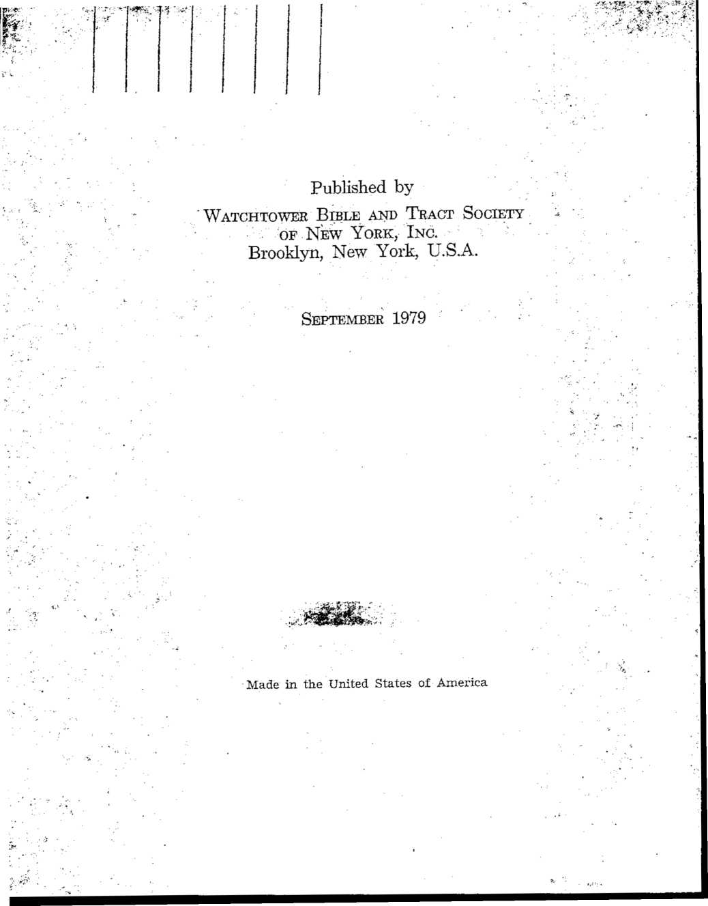

' Pay Attention to Yourselves and to All the Flock. "-Acts 20:28.
Kingdom Ministry School Textbook (k$79)
Explanation of School Course
(Introduction)
This Kingdom Ministry School Textbook (ks79) is a supplement of textbook material added to the Kingdom Ministry School Textbook (ks77). It is likewise entitled “Pay Attention to Yourselves and to AH the Flock.” —Acts 20:28.
The 1979-80 Kingdom Ministry School Course for Elders will include this supplement (ks79) as well as parts of the original 1977 textbook (ks77). The 1979-80 school will cover a program involving 15 hours of training for the elders even as the 1977-78 course comprised. Following is the 1979-80 schedule:
Conducted by
Instructor
|
Opening Comments (Use ks79 Introduction.) 14 hour A Unit 2(a) (ks77) 114 hours A Unit 2(b) (ks77) 114 hours B (c) Discussion sessions omitted Unit 6(a) (ks79) 2 hours A Unit 6(b) (ks79) 2 hours B Unit 3(a) (ks77) 114 hours A Unit 3(b) (ks77) 114 hours B Unit 7 (a) (ks79) 2 hours A Unit 7 (b) (ks79) 2 horns B Concluding Oral Review Discussion 14 hour A and B Concluding Talks by Instructors 14 horn B and A | |
|
Total |
15 hours. |
KINGDOM MINISTRY SCHOOL COURSE
|
Unit |
6 |
Page |
|
(a) |
‘Continue Applying Yourself to Teaching’ (1 Tim. 4:13) |
103 |
|
(b) |
Teaching on a Personal Basis |
107 |
|
Unit |
7 | |
|
(a) |
How We Can Help One Another in the Evangelizing Work |
112 |
|
(b) |
Taking a Personal Interest in Others (Phil. 2:4) |
119 |
TO THE STUDENT: This supplementary portion has been prepared under the direction of the Governing Body. It has been designed to provide elders with instruction and counsel to aid them to teach more effectively and to lead the congregation in the evangelizing work in the field. To derive the most benefit from this Kingdom Ministry School Course, it is suggested that each elder, before coming to class, read over the outlines and be prepared to share in the classroom discussions. Where it is possible, instructors will see that the textbooks are made available ahead of time. There is no need to be unduly anxious or apprehensive during the course. The instructors and your fellow elders are meeting together as mature brothers to receive mutual spiritual benefit and encouragement.—Rom. 1:12.
TO THE INSTRUCTORS: Where possible, arrangements are being made for two instructors to conduct each school for the elders. Both instructors will be present during each of the class sessions. Instructors will alternate as classroom chairman, each conducting an equal number of classroom sessions. They will share in the Concluding Oral Review and Concluding Talks for the final hour of the special school. Ten-minute recesses are suggested between subjects.
There will be portions in each textbook that will allow for some in the class to show how they would teach or counsel on a personal basis in various situations involving publishers in the congregation. The instructors will assign these parts in advance to some of the students so that they can be properly prepared and show how they would handle these situations.
The scheduling of the school sessions can be flexible. In some cases where a weekend is set aside for the school program, eight and a half hours could be presented on the Saturday and six and a half hours on the Sunday. Where the school is conducted during five evenings of the week, the course could be divided so that there would be about three hours of classroom training an evening. It will be up to the branch office to schedule school sessions in harmony with what is best locally.
We can help the brothers and others to gain eternal life by our being effective teachers. (1 Tim. 4:16) To accomplish this, constant effort, observation and prayer are needed. Paul exhorted the Christian overseer Tim-othy: “Continue applying yourself to . . . teaching.” (1 Tim. 4:13) To succeed in this, we must see the objective—being “absorbed,” helping others to gain life. —1 Tim. 4:15.
Effective use of the Bible is essential to get to the heart of our listener. Whether we are teaching groups or individuals, the Bible is the inspired means of motivation. However, those taught need to understand the message. They need to discern why the material applies to them and how they can use it in their lives. All Christian elders, therefore, want to exert themselves prayerfully to make continued advancement in their ability to teach.
The Bible has appealed to people’s hearts as no other writings have. (Heb. 4:12,- Ps. 19:7-9)
Even those outside the Christian congregation have had to acknowledge its value.
103
“There is one Book, and only one, which embraces all the heights and depths of human nature. The Bible belongs to those elemental things . . . which can never grow stale or out of date.” (The Greatest Book in the World, quoted in w77, p. 291)
The Encyclopedia Britannica describes the Bible as constituting “probably the most influential collection of books in human history.”
If, as elders, we have true heart appreciation of the Scriptures we will demonstrate it in our talks, meetings and personal discussions.
When teaching groups or individuals, we desire them to see not only what the Bible says but also why that is. the best course.
It is not sufficient just to read the scriptures and expect the students to get the point.
Stick to what God’s Word says when we teach and counsel. (Jer. 10:23, 24)
As imperfect people we are inclined to be wrongly influenced by our flesh, worldly environment and erroneous earlier teachings. (1 Cor. 4:6, 7)
Constantly emphasize what the Bible states and show how Bible principles should guide our course under any given situation. (John 7:16-18)
Therefore, we should reason with people from the key scriptures upon which our discussion is based. (Acts 17:2,. 3)
Have the elders illustrate how they would teach publishers to reason on the Bible principles involved in the following situations: [For each of the following six situations assign ahead of time two separate elders, each to give four' minutes of counsel. In this way the student is to teach by using some of the cited material. Following each pair of presentations permit the class to offer additional remarks.]
1. Should I get a divorce from my unbelieving mate? (1 Cor. 7:3-5,12-16; Matt. 19:9; Eph. 4:32; see also Awake!, Sept. 22, 1973, pp. 26-28.)
2. Should I go to college or vocational school? (1 Tim. 5:8; 6:20; Col. 2:8; Eph. 4:28; see also w75, p. 543; Awake!, June 8, 1971, pp. 3-8.)
3. Would there be any objection to my having a beard? [or other grooming situation in your area] (Lev. 19:27; 2 Cor. 6:3, 4; Rom. 15:3; see also w73, pp. 139, 140; w77, pp. 149, 150.)
4. What should I do, since this brother has broken his business contract? (Jer. 32:6-14; Matt. 5:37, 23-25; 18:15-17; 1 Cor. 6:1-7; Eph. 4:25; see also w73, pp. 287, 288.)
5. Should I go into business with an unbeliever? (Prov. 13:20; 1 Tim. 5:8; 6:7-10; 2 Tim. 2:4)
6. How much association can I have with my dis-fellowshiped relative? (Deut. 13:6-9; Eph. 6:2, 4;
1 Tim. 3:4, 5, 12; 2 John 7-11; [emphasize that circumstances vary.])
(Page for additional student notes)
[The instructor will prepare brief opening remarks for this unit. He will arouse interest in the subject.]
Depending on the situation, advance preparation is valuable even though you are experienced.
At times, however, you may be approached with little or no notice.
Good to have outline of main points if circumstances permit.
Be ready to adjust where needed as discussion develops.
Outline should include appropriate scriptures and an understanding of how these apply.
Be determined to move ahead with what is needed.
Some elders are reluctant to give counsel; postpone or avoid action. They may be evading their responsibility.
Recognize the need and loyally fulfill the responsibility.
Have the individual’s spiritual interest in mind, not just the subject or material to be discussed. (Phil. 2:4)
Elders who have been close to the publishers and know them well have considerable advantage here. (Compare 1 Thessalonians 2:5-12.)
107
Appropriate at times to begin with prayer. (Eph. 6:18)
Let your good motive be manifest in manner and speech.
Be helpful; a relationship with Jehovah is involved.
Cultivate in the individual a desire to listen and cooperate. Build in him a love for what is right and a desire to please Jehovah. (2 Sam. 12:1-7)
Your manner should be kind, considerate, dignified; not harsh, overbearing or authoritarian. (Gal. 6:1)
Develop an atmosphere of communication. Draw him into the conversation. Get him to think, to reason and to apply counsel.
Try to discern reaction and whether counsel is sinking in. Is he inclined to follow it? (Prov. 19:20)
Whole procedure will involve patience, forbearance.
May at times be necessary to exercise firmness. (Titus 1:9, 13; Eccl. 12:11) ‘
Be sure to get all the facts. (Deut. 13:14) Encourage the person to speak freely. Ask questions to clarify areas of uncertainty, but avoid the appearance of being an interrogator.
Withhold counsel until you have heard the whole story.
(Prov. 18:13)
When counseling one of the opposite sex, best to have another brother along with you.
Caution required in case of one who has been known to be devious; here, too, another elder present will be helpful. (Prov. 3:32)
Some situations may try your patience. Guard against becoming emotionally upset. (2 Tim. 2:24, 25)
In addition to the following five situations, think of others where the above suggestions would apply: [It would be well for the instructor to assign ahead of time two elders to give five minutes of counsel each, separately, on each of the five following situations. The instructor may also prepare three other local , situations. Assign one elder to offer five minutes of counsel on each of these three. Encourage members of the class to add points of counsel as each situation is examined.]
1. A brother has been missing meetings and you learn he is spending a good deal of time at questionable movies. How do you approach him, and what would you say? [Unwise course, contrary to Philippians 4:8]
2. A sister who has stopped preaching decides she wants to have nothing more to do with the organization. [Encourage to avoid disassociation; example, John 6:66-69.]
3. An interested person who is in this country illegally wants to be baptized. [Allowable, but limited privileges; 1 Tim. 3:2.]
4. A ministerial servant was seen smoking on the job. He claims he smoked only on two occasions. [Has a practice developed? 1 Tim. 5:20]
5. A brother has separated from his dedicated wife and has been seen with a worldly woman a number of times. [Not free to date; 1 Cor. 7:10, 11.]
Words or teaching ability of little value if elder is not himself a good example. Paul stressed this point at Romans 2:21-23; 1 Timothy 4:12, 13.
Have good study habits. Be a student of the Bible and the Society’s publications. Demonstrate faith in John 17:3.
By applying what you learn and building thereon, you will be able to teach effectively. (Luke 6:46-49)
We all need one another. (1 Cor. 12:21-23) In the congregation, elders should stimulate a spirit of building one another up for evangelizing work. (1 Thess. 5:11-13) One of the best ways to do this is by setting a good lead in service and offering to help others freely.
There is much to do in helping all to serve as fully as their circumstances and desires will allow. (1 Thess. 4:1) Elders will want to be alert to ways in which ministerial servants, pioneers, faithful sisters and youths can assist in achieving this goal. Youths, new ones, the sick, elderly, handicapped and inactive ones have varying needs. Even the ministerial servants and some elders may be in need of assistance. We can be sure that Jehovah will bless our earnest efforts to help one another to share in this lifesaving work.—Heb. 11:6.
(See English 'Watchtower of July 15, 1979.)
Does Acts 20:20, 21 relate to our public house-to-house work? If so, how? (See page 12, paragraph 17.)
How does Revelation 14:6-8 apply “from house to house” world wide? (See page 18, paragraphs 16,17.)
112
Excellent group of men to work with overseers and be trained to assume greater responsibility. (Phil. 1:1)
When can we provide such training and encouragement?
We will be stressing good support for field service on the first Sunday of each month.
There is wisdom in making definite appointments to work with the various ministerial servants. This will pay rich dividends.
How can we help them?
In field service, from door to door many need to learn and apply the art of good conversation: Be flexible, more adaptable, able to follow up interest, discern where a study can be started.
For example, we can teach ministerial servants how to be less formal when calling from door to door. Show the people we love them by the kind way in which we treat them. Avoid impression of lecturing the people or “selling” them something. (2 Cor. 2:17)
Make use of campaign literature offer in accord with wise suggestions in Our Kingdom Service.
In between house calls we can analyze situations, take time to discuss where improvement could have been made.
Demonstrate in class how we can help ministerial servants in the following situations: [Assign in advance elders to participate in these two demonstrations.]
1. A ministerial servant who is carrying out his duties and responsibilities in the congregation well (Example: good accounts servant) but who is weak in house-to-house work, finds little joy in field service.
2. A ministerial servant whose family is starting to show low spirituality. He is neglecting studying with them. Does fairly well in field service himself, but never takes his wife or children with him. Their situation at home is not conducive to a happy family atmosphere. Reason on 1 Timothy 5:8 and Ephesians 6:4.
SUPPORTING AND ENCOURAGING
Elders can do much to help pioneers. They are subject to discouragement and problems just as all of us are.
Talk with them so as to know what they are doing and how they are getting along. There is a difference between just talking to them and showing personal interest in them. (Phil. 2:3, 4)
How can you help a discouraged pioneer, under the foEowing circumstances, when—
Not many people are home, so he talks to few in the territory?
He is placing very little literature?
He feels that the congregation does not really appreciate him?
He wonders if he is truly accomplishing very much?
He has to work alone much of the time?
A pioneer gets no cooperation from his family. Possibly there is opposition. What are some things we might do?
A pioneer does not appear to be effective in the field. How might we help him—
In the door-to-door work?
In informal 'witnessing?
In the return visit work?
In the home Bible study work?
At the end of the service year the Society sends pioneers a letter. Why is it encouraging to pioneers for selected elders to meet with them and discuss this letter?
Circuit overseers pay special attention to pioneers.
How might the elders cooperate with the circuit overseer before, during and after his visit so that a pioneer receives the greatest benefit and encouragement?
How might the elders work with a pioneer so that he gets the most benefit from the circuit overseer’s visit?
GIVING PROGRESSIVE HELP TO NEW ONES
The word “training” brings what thoughts to your mind?
Teaching good field service habits from the beginning is vital. ' ' '
Do you feel that those trained to have good schedules usually continue in this routine? Why? . j
What are some things, then, that can be done to provide this good training—
By his teacher?
By the elders?
By others?
Will his enrolling in the Theocratic School help him to improve his effectiveness in the field: service? How? {School Guidebook, Study 19, p.' 96) What can’ be done to encourage him in this?
F' . . 117
? Why is getting him, acquainted with his'congregation ’ book study group and its field sendee arrangements a good thing?
What field .service training can he expect to receive there?
How will theXassociation there be of help to him in the evangelizing work? [Warm relationship develops. More
I convenient.]
,.yy ' * -
*/’ ' 'A
(Page for additional student notes)
[The instructor will prepare brief opening remarks for this unit. He will arouse interest in the subject.]
Tremendous pressures and problems confront young ones today.
Families need much encouragement to maintain happy atmosphere for youthful growth.
Our goal should be to work through family heads to help them make sure their young ones are in good spiritual condition. (3 John 4)
We do not want to be assisting and encouraging new ones to come in, so to speak, through the front door, while our children go out through the back door as they reach the teen years. This happens all too often and shows the need for elders to take great interest in family problems.
It is expected that fathers who are elders, when making definite appointments to serve in the field, will not overlook training their own children, giving them priority.
In families where only one parent is in the truth, how can elders and ministerial servants take young ones "under their wing”?
How can elders and parents influence the attitude of their young folks toward full-time evangelizing service?
How will pioneering, if not as a lifelong career, help prepare them for a stable Christian family life and their particular role in it?
In a broader way help young ones see stabilizing benefits of consistent evangelizing routine.
Toward this end, we can help our young ones to share joyfully in the evangelizing work with consistency.
Encourage young people to share the truth in school; they have a unique field.
Some youngsters leave books, such as Bible Stories book and the Youth book, on their desks and have some outstanding experiences.
After school hour’s, meetings for field service can be conducted by pioneers, circuit overseers and other responsible brothers who can arrange for this.
We can make field service enjoyable, rewarding and enriching for our-young ones; commend them for their progress.
At meetings young people can relate experiences for the encouragement of others.
Have elders discuss the following situations and how best to handle them: [Assign ahead of time one elder to discuss for five minutes each of the following four situations. Give time for class observations.]
1. Young one who is interested in the opposite sex and tends to pursue worldly association and attitudes. (1 Cor. 7:39)
2. Young person with a permissive unbelieving parent. (Prov. 29:15, 21)
3. One who has limited share in field service, but definitely has marriage in mind. (1 Tim. 3:4, 5, 13)
4. A congregation does not have many young ones and the complaint by one is: “There is no one my age to associate with, so I have only my worldly school friends.” (Gen. 34:1, 2)
How can we follow Jehovah’s example in showing concern for faithful ones with limitations? (Ps. 92:13-15; 41:1-3; Lev. 19:32)
How can various ones in the congregation assist these limited ones to share in the evangelizing work?
Do you know any experiences that show how well this has worked? (See Awake!, May 8, 1973, p. 11; w76 p. 292.)
122
WHAT ABOUT THOSE
Determine initially why he became inactive.
He may have been pushed into the field service, not properly trained. His heart was not in it.
Best to approach situation in a kindly way.
Main thing is to show a genuine interest in a person’s faith and what can be done to help him improve in his relationship with Jehovah. Once this relationship is repaired we can make good moves in the right । direction of reactivating such a one.
Have elders discuss and demonstrate how to help those who have been active but who are in the following categories: [Assign ahead of time two elders to discuss and demonstrate together for about five minutes each of ■ the following three situations.]
1. One who feels there is too much pressure upon him to preach.
2. One who does not get joy from serving Jehovah.
3. One who thinks we are interested only in his report.
ROLE OF SERVICE OVERSEER
IN STRENGTHENING THE
All elders should be field-oriented, but service overseer should be especially concerned with stimulating participation in the evangelizing work.
Along with fellow elders he will keep the urgency of the evangelizing work to the fore:
1 During elders’ meetings.
When visiting the book study groups.
To individual elders at other times when a need becomes evident.
By his own example and attitude in connection with field service. (1 Cor. 4:17; 11:1)
! Why will doing the things listed below be helpful as he visits each study group?
• Reviewing the publishers’ field records.
Examples:
A sister averages 40 hours a month, but her children are weak. What might be her problem?
A brother not out in field service for 5 of 6 months. What could be done?
Making appointments to work with various publishers.
Discussing the field activity and spiritual needs of the group with the book study conductor.
Why might it be advantageous for the service overseer to include in his talk to the book study groups things such as those listed below—
The Scriptural attitude toward preaching?
The rewards from whole-souled service?
124 . •
Practical ideas that can be used in that group’s field' service?
Examples:
Introductions; keeping and following through with not-at-homes; subjects that might appeal; ways to handle various viewpoints in territory.
Suggestions for getting and keeping Bible studies.
Upbuilding field experiences.
Can you think of other matters that might beneficially be included in these talks?
What must the service overseer do to make his 15-minute talks beneficial?
Service overseers can have in mind that they can use pioneers, ministerial servants and others to help stimu- ' late and provide practical assistance to the congregation in its evangelizing work.
(Page for additional student notes) '
\
128 ।
(Page for additional student notes) *